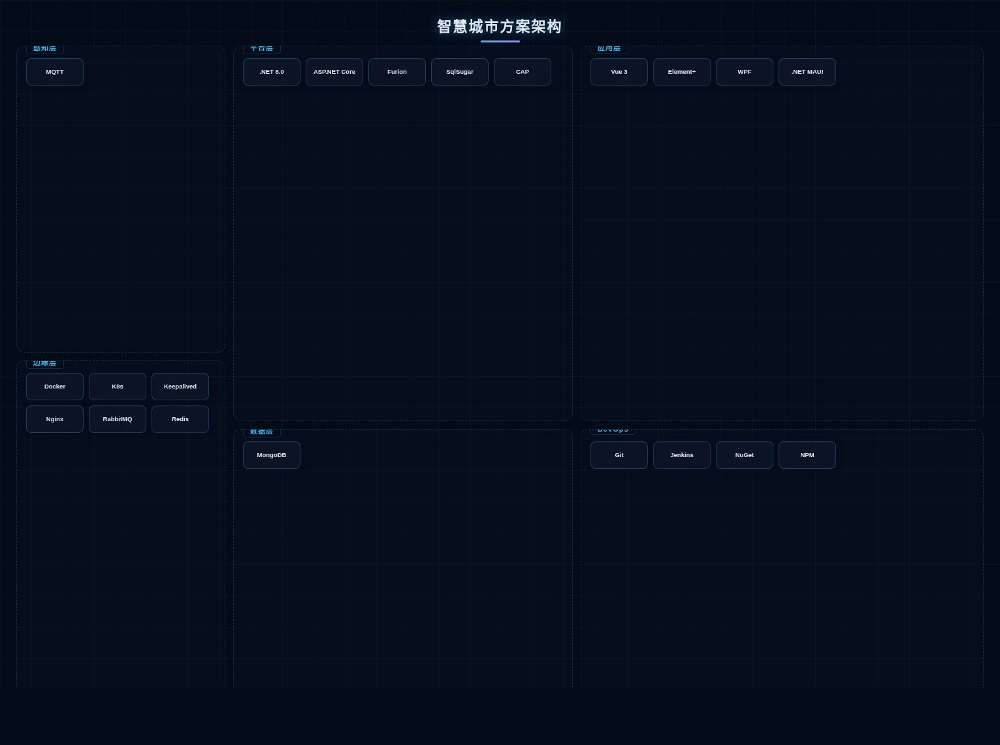

方案架构

智慧城市数字孪生架构

数字孪生城市架构示意（来源：数字孪生梳理参考材料）
智慧城市解决方案以 CIM 城市信息模型为数字底座，采用「云原生微服务 + 数据中台」架构。城市物联感知接入层汇聚交通、安防、环保、市政等多源异构数据，通过 MQTT / HTTP / WebSocket 进入数据中台；RabbitMQ 集群实现实时清洗与治理，DotNetCore.CAP 保障关键城市事件的事务一致性；AI 中台基于 .NET 8.0 + ASP.NET Core + Furion 构建，集成 SqlSugar 多库适配、Redis Cluster 海量缓存与 MongoDB 时序存储，支撑城市级流量预测、环境预警与应急推演。应用层以 Vue 3 + Element Plus 构建「城市大脑」指挥大屏与各委办局业务系统，桌面决策端基于 WPF 或 .NET MAUI 构建 Native 级工作站。基础设施层通过 Docker + Kubernetes 容器编排实现弹性扩缩容，Keepalived + Nginx 主备保障高可用，Git + Jenkins + NuGet/NPM 构建持续交付流水线，打破部门信息孤岛，实现跨域数据互通与业务协同。
方案组成
核心能力
应用场景

智慧城市应用场景
城市运行监测、应急指挥调度、交通优化、环境监测、公共服务、城市规划仿真等领域。通过数字孪生技术，在虚拟空间中预演城市方案，降低实际建设风险和成本。
方案优势
基于数字孪生技术实现城市「虚实映射」，可在虚拟空间中预演城市规划方案，降低实际建设风险。平台具备弹性扩展能力，支持从单个街区到整个城市的分级建设，投资可控、见效快速。
方案价值
提升城市治理精细化水平，推动政务服务「一网通办」、城市运行「一网统管」。通过数据驱动优化公共资源配置，改善市民生活品质，为城市可持续发展奠定数字化基础。
项目实践
AXLTeco 积极参与非洲城市数字化建设，为拉各斯等城市提供智慧交通、安防监控、弱电智能化等基础设施服务，积累了丰富的城市级项目实施经验。